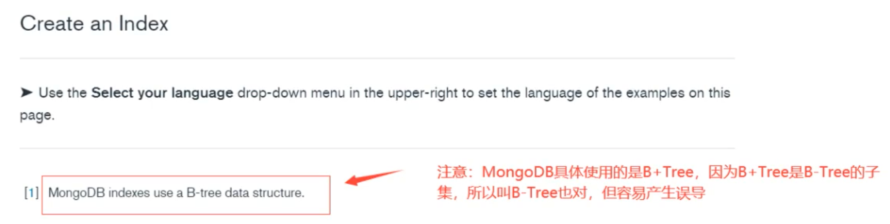
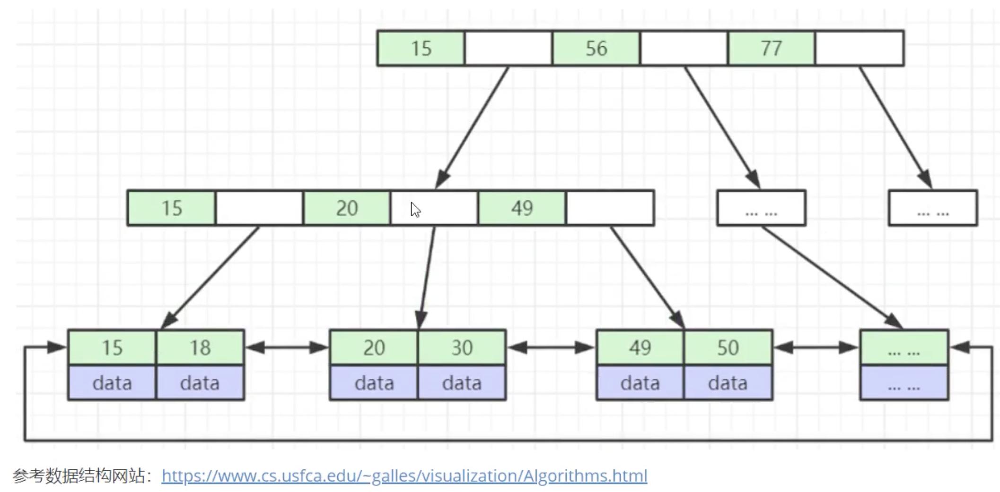
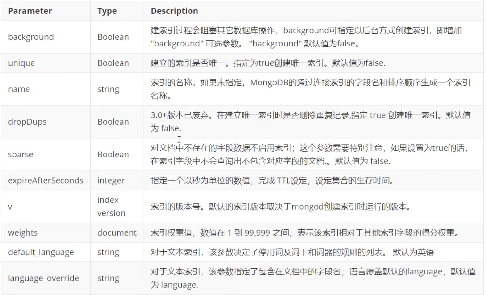
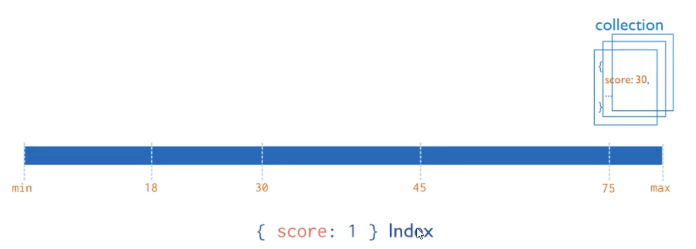
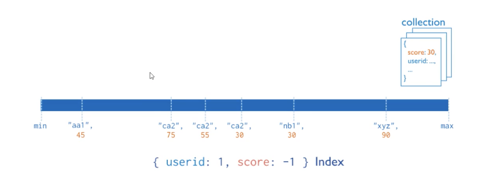
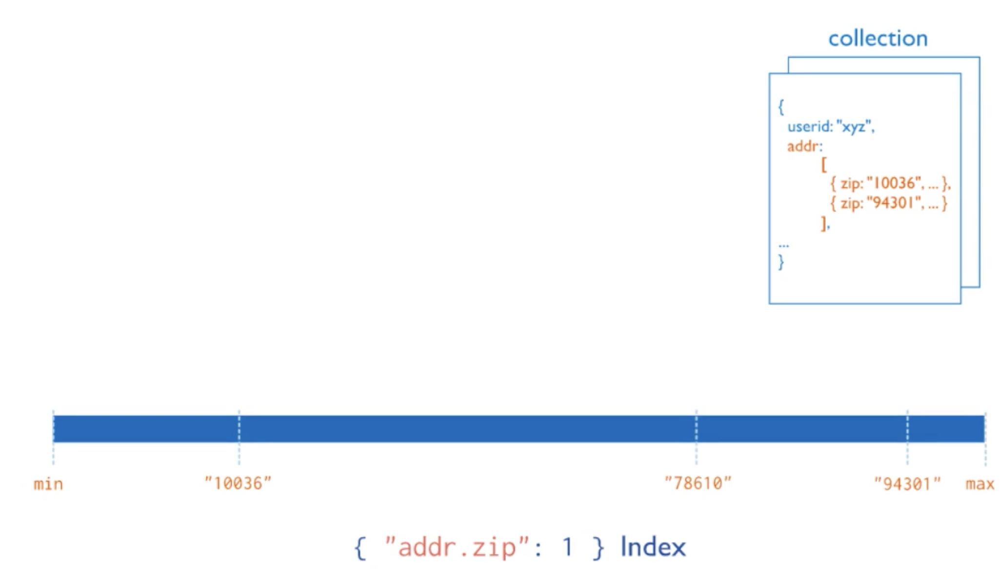
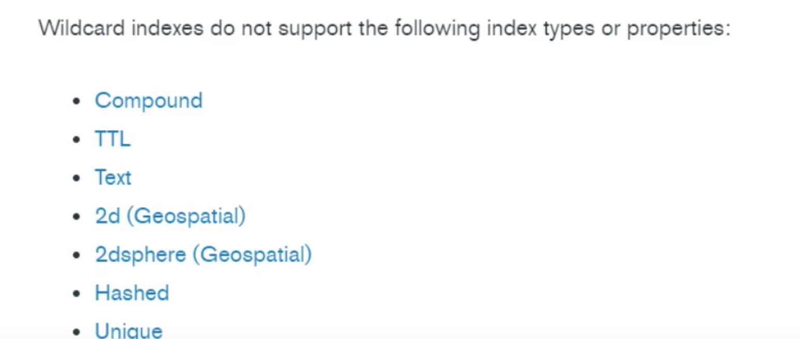

9 MongoDB索引
9.1 介绍
索引是一种用来快速查询数据的数据结构。B+ Tree就是一种常用的数据库索引数据结构，MongoDB采用B+ Tree做索引，索引创建在colletions上。
MongoDB不使用索引的查询，先扫描所有的文档，再匹配符合条件的文档。使用索引的查询，通过索引找到文档，使用索引能够极大的提升查询效率。
MongoDB索引数据结构
思考：MongoDB索引数据结构是B-Tree还是B+ Tree ？
B-Tree说法来源于官方文档，然后就导致了分歧：有人说MongoDB索引数据结构使用的是B-Tree，有的人又说是B＋ Tree
MongoDB官方文档：https://docs.mongodb.com/manual/indexes/
MongoDB indexes use a B-tree data structure.


索引的分类
- 按照索引包含的字段数量，可以分为单键索引和组合索引（或复合索引）。
- 按照索引字段的类型，可以分为主键索引和非主键索引。
- 按照索引节点与物理记录的对应方式来分，可以分为聚簇索引和非聚簇索引，其中聚簇索引是指索引节点上直接包含了数据记录，而后者则仅仅包含一个指向数据记录的指针。
- 按照索引的特性不同，又可以分为唯一索引、稀疏索引、文本索引、地理空间索引等
与大多数数据库一样，MongoDB支持各种丰富的索引类型，包活单键索引、复合索引唯一索引等一些常用的结构。
由于采用了灵活可变的文档类型，因此它也同样支持对嵌套字段、数组进行索引。通过建立合适的索引，我们可以极大地提升数据的检索速度。在一些特殊应用场景，MongoDB还支持地理空间索引、文本检索索引、TTL索引等不同的特性。
9.2 索引操作
创建索引
创建索引语法格式
db.collection.createIndex(keys,options)
- Key值为你要创建的索引字段，1按升序创建索索引, -1 按降序创建索引
- 可选参数列表如下：

注意：3.0.0版本前创建索引方法为db.collection.ensurelndex()
＃创建索引后台执行
db.values.createIndex({open:1, close:1}, {background:true})
＃创建唯一索引
db.values.createlndex({title:1}, {unique:true})
---
> show dbs
admin 0.000GB
aggdemo 0.000GB
appdb 0.000GB
config 0.000GB
local 0.000GB
test 0.002GB
viewdemo 0.001GB
> use appdb
switched to db appdb
> show tables
books
emps
user
> db.books.getIndexes()
[ { "v" : 2, "key" : { "_id" : 1 }, "name" : "_id_" } ]
> db.books.find({title:"book-8"})
{ "_id" : ObjectId("623b0766b815b989a2335e7d"), "title" : "book-8", "type" : "sociality", "tag" : "mongodb", "favCount" : -100, "author" : "xxx8"
> db.books.find({title:"book-8"}).explain()
{
"queryPlanner" : {
"plannerVersion" : 1,
"namespace" : "appdb.books",
"indexFilterSet" : false,
"parsedQuery" : {
"title" : {
"$eq" : "book-8"
}
},
"queryHash" : "6E0D6672",
"planCacheKey" : "6E0D6672",
"winningPlan" : {
"stage" : "COLLSCAN",
...
db.books.createIndex({title:1})
> db.books.createIndex({title:1})
{
"createdCollectionAutomatically" : false,
"numIndexesBefore" : 1,
"numIndexesAfter" : 2,
"ok" : 1
}
db.books.getIndexes()
> db.books.getIndexes()
[
{
"v" : 2,
"key" : {
"_id" : 1
},
"name" : "_id_"
},
{
"v" : 2,
"key" : {
"title" : 1
},
"name" : "title_1"
}
]
注意：3.0.0版本前创建索引方法为db.collection.ensureIndex()
＃创建索引后台执行
db.values.createIndex({open:1, close:1}, {background:true})
＃创建唯一索引
db.values.createIndex({title:1},{unique:true})
查看索引
#查看索引信息
db.books.getIndexes()
＃查看索引键
db.books.getIndexKeys()
查看索引占用空间
db.collection.totalIndexSize([is_detail]）
is_detail：可选参数，传入除0或false外的任意数据，都会显示该集合中每个索引的大小及总大小。如果传入0或false则只显示该集合中所有索引的总大小。默认值为false
> db.books.getIndexKeys()
[ { "_id" : 1 }, { "title" : 1 } ]
> db.books.totalIndexSize()
57344
> db.books.totalIndexSize(0)
57344
> db.books.totalIndexSize(1)
_id_ 36864
title_1 20480
57344
删除索引
＃删除集合指定索引
db.col.dropIndex("索引名称")
＃删除集合所有索引
db.col.dropIndexes()
9.3 索引类型
单键索引（Single Field Indexes)
在某一个特定的字段上建立索引mongoDB在ID上建立了唯一的单键索引，所以经常会使用Id来进行查询；在索引字段上进行精确匹配、 排序以及范围查找都会使用此索引

db.books.createIndex({title:1})
内嵌文档字段创建索引
db.books.createIndex({"author.name":1}
> db.books.createIndex({"author.name":1})
{
"createdCollectionAutomatically" : false,
"numIndexesBefore" : 2,
"numIndexesAfter" : 3,
"ok" : 1
}
> db.books.getIndexes()
[
{
"v" : 2,
"key" : {
"_id" : 1
},
"name" : "_id_"
},
{
"v" : 2,
"key" : {
"title" : 1
},
"name" : "title_1"
},
{
"v" : 2,
"key" : {
"author.name" : 1
},
"name" : "author.name_1"
}
]
复合索引（Compound Index)
复合索引是多个字段组合而成的界引，其性质和单字段索引类似。但不同的是，复合索引中字段的顺序、字段的升降序对查询性能有直接 的影响，因此在设计复合索引时则需要考虑不同的查询场景。

db.books.createIndex({type:1, favCount:1})
> db.books.createIndex({type:1, favCount:1})
{
"createdCollectionAutomatically" : false,
"numIndexesBefore" : 3,
"numIndexesAfter" : 4,
"ok" : 1
}
> db.books.getIndexes()
...
{
"v" : 2,
"key" : {
"type" : 1,
"favCount" : 1
},
"name" : "type_1_favCount_1"
}
]
多键索引（Multikey Index)
在数组的属性上建立索引。针对这个数喇的任意值的查询都会定位到这个文档，既多个索引入口或者键值引用同一个文档

db.inventory.insertMany([
{ _id: 5, type: "food", item: "aaa", ratings: [ 5, 8, 9 ] },
{ _id: 6, type: "food", item: "bbb", ratings: [ 5, 9 ] },
{ _id: 7, type: "food", item: "ccc", ratings: [ 9, 5, 8 ] },
{ _id: 8, type: "food", item: "ddd", ratings: [ 9, 5 ] },
{ _id: 9, type: "food", item: "eee", ratings: [ 5, 9, 5 ] }
])
> db.inventory.insertMany([
... { _id: 5, type: "food", item: "aaa", ratings: [ 5, 8, 9 ] },
... { _id: 6, type: "food", item: "bbb", ratings: [ 5, 9 ] },
... { _id: 7, type: "food", item: "ccc", ratings: [ 9, 5, 8 ] },
... { _id: 8, type: "food", item: "ddd", ratings: [ 9, 5 ] },
... { _id: 9, type: "food", item: "eee", ratings: [ 5, 9, 5 ] }
... ])
{ "acknowledged" : true, "insertedIds" : [ 5, 6, 7, 8, 9 ] }
创建多键索引
> db.inventory.createIndex({ ratings:1 })
> db.inventory.createIndex({ ratings:1 })
{
"createdCollectionAutomatically" : false,
"numIndexesBefore" : 1,
"numIndexesAfter" : 2,
"ok" : 1
}
多键索引很容易与复合索引产生混淆，复合索引是多个字段的组合，而多键索引则仅仅是在一个字段上出现了多键(multi key)。而实质上，多键索引也可以出现在复合字段上
＃创建复合多值索引
db.inventory.createIndex({item:1, ratings:1})
汪意：MongoDB并不支持一个复合索引中同时出现多个数组字段
嵌入文档的索引数组
> db.inventory.createIndex({item:1, ratings:1})
{
"createdCollectionAutomatically" : false,
"numIndexesBefore" : 2,
"numIndexesAfter" : 3,
"ok" : 1
}
> db.inventory.getIndexes()
[
{
"v" : 2,
"key" : {
"_id" : 1
},
"name" : "_id_"
},
{
"v" : 2,
"key" : {
"ratings" : 1
},
"name" : "ratings_1"
},
{
"v" : 2,
"key" : {
"item" : 1,
"ratings" : 1
},
"name" : "item_1_ratings_1"
}
]
db.inventory.insertMany([
{
_id: 1,
item: "abc",
stock: [
{ size: "S", color: "red", quantity: 25 },
{ size: "S", color: "blue", quantity: 10 },
{ size: "M", color: "blue", quantity: 50 }
]
},
{
_id: 2,
item: "def",
stock: [
{ size: "S", color: "blue", quantity: 20 },
{ size: "M", color: "blue", quantity: 5 },
{ size: "M", color: "black", quantity: 10 },
{ size: "L", color: "red", quantity: 2 }
]
},
{
_id: 3,
item: "def",
stock: [
{ size: "S", color: "blue", quantity: 15 },
{ size: "L", color: "blue", quantity: 100 },
{ size: "L", color: "red", quantity: 25 }
]
}
])
{ "acknowledged" : true, "insertedIds" : [ 1, 2, 3 ] }
> db.inventory.find()
{ "_id" : 1, "item" : "abc", "stock" : [ { "size" : "S", "color" : "red", "quantity" : 25 }, { "size" : "S", "color" : "blue", "quantity" : 10 }, { "size" : "M", "color" : "blue", "quantity" : 50 } ] }
{ "_id" : 2, "item" : "def", "stock" : [ { "size" : "S", "color" : "blue", "quantity" : 20 }, { "size" : "M", "color" : "blue", "quantity" : 5 }, { "size" : "M", "color" : "black", "quantity" : 10 }, { "size" : "L", "color" : "red", "quantity" : 2 } ] }
{ "_id" : 3, "item" : "def", "stock" : [ { "size" : "S", "color" : "blue", "quantity" : 15 }, { "size" : "L", "color" : "blue", "quantity" : 100 }, { "size" : "L", "color" : "red", "quantity" : 25 } ] }
在包含嵌套对象的数组字段上创建多键索引
db.inventory.createIndex( {"stock.size":1, "stock.quantity": 1 })
> db.inventory.createIndex( {"stock.size":1, "stock.quantity": 1 })
{
"createdCollectionAutomatically" : false,
"numIndexesBefore" : 3,
"numIndexesAfter" : 4,
"ok" : 1
}
db.inventory.find( {"stock.size": "S", "stock.quantity": { $gt:20 } })
> db.inventory.find( {"stock.size": "S", "stock.quantity": { $gt:20 } })
{ "_id" : 1, "item" : "abc", "stock" : [ { "size" : "S", "color" : "red", "quantity" : 25 }, { "size" : "S", "color" : "blue", "quantity" : 10 }, { "size" : "M", "color" : "blue", "quantity" : 50 } ] }
{ "_id" : 3, "item" : "def", "stock" : [ { "size" : "S", "color" : "blue", "quantity" : 15 }, { "size" : "L", "color" : "blue", "quantity" : 100 }, { "size" : "L", "color" : "red", "quantity" : 25 } ] }
地理空间索引（Geospatial Index)
在移动互联网时代，基于地理位置的检索（LBS)功能几乎是所有应用系统的标配。MongoDB为地理空间检索提供了非常方便的功能。 地理空间索引(2dsphereindex）就是专门用于实现位置检索的一种特殊索引。
案例：MongoDB如何实现“查询附近商家"？
假设商家的数据模型如下：
db.restaurant.insert({
restaurantld: 0,
restaurantName:"KFC",
location : {
type: "Point",
coordinates: [ -73.97, 40.77 ]
}
})
WriteResult({ "nInserted" : 1 })
创建一个2dsphere索引
db.restaurant.createIndex({location : "2dsphere"})
> db.restaurant.createIndex({location : "2dsphere"})
{
"createdCollectionAutomatically" : false,
"numIndexesBefore" : 1,
"numIndexesAfter" : 2,
"ok" : 1
}
> db.restaurant.getIndexes()
[
{
"v" : 2,
"key" : {
"_id" : 1
},
"name" : "_id_"
},
{
"v" : 2,
"key" : {
"location" : "2dsphere"
},
"name" : "location_2dsphere",
"2dsphereIndexVersion" : 3
}
]
查询附近10000米商家信息
db.restaurant.find({
location: {
$near: {
$geometry: {
type: "Point",
coordinates: [-73.88, 40.78]
},
$maxDistance: 10000
}
}
})
{ "_id" : ObjectId("62626b3261515830838dcb6e"), "restaurantld" : 0, "restaurantName" : "KFC", "location" : { "type" : "Point", "coordinates" : [ -73.97, 40.77 ] } }
$near查询操作符，用于实现附近商家的检索，返回数据结果会按距离排序。$geometry操作符用于指定一个GeoJSON格式的地理空间对象，type=Point表示地理坐标点，coordinates则是用户当前所在的经纬度位置；$maxDistance限定了最大距离，单位是米。
全文索引(Text Indexes)
MongoDB支持全文检索功能，可通过建立文本索引来实现简易的分词检索。
db.reviews.CreateIndex({ comments:"text" })
$text操作符可以在有text index的集合上执行文本检索。$text将会使用空格和标点符号作为分隔符对检索字符串进行分词，并且对检索字符串中所有的分词结果进行一个逻辑上的OR操作。
全文索引能解决快速文本查找的需求，比如有一个博客文章集合，需要根据博客的内容来快速查找，则可以针对博客内容建立文本索引。
案例
数据准备
db.stores.insert(
[
{_id: 1, name: "Java Hut", description: "Coffe and Cakes"},
{_id: 2, name: "Burger Buns", description: "Gourmet hamburgers"},
{_id: 3, name: "Coffee Shop", description: "Just Coffee"},
{_id: 4, name: "Clothes Clothes Clothes", description: "Discount clothing"},
{_id: 5, name: "Java Shopping", description: "Indonesian Goods"},
]
)
BulkWriteResult({
"writeErrors" : [ ],
"writeConcernErrors" : [ ],
"nInserted" : 5,
"nUpserted" : 0,
"nMatched" : 0,
"nModified" : 0,
"nRemoved" : 0,
"upserted" : [ ]
})
创建name和description的全文索引
db.stores.createIndex({ name:"text", description:"text"})
> db.stores.createIndex({ name:"text", description:"text"})
{
"createdCollectionAutomatically" : true,
"numIndexesBefore" : 1,
"numIndexesAfter" : 2,
"ok" : 1
}
> db.stores.getIndexes()
[
{
"v" : 2,
"key" : {
"_id" : 1
},
"name" : "_id_"
},
{
"v" : 2,
"key" : {
"_fts" : "text",
"_ftsx" : 1
},
"name" : "name_text_description_text",
"weights" : {
"description" : 1,
"name" : 1
},
"default_language" : "english",
"language_override" : "language",
"textIndexVersion" : 3
}
]
测试
通过$text操作符来查寻数据中所有包含“coffee","shop",'java"列表中任何词语的商店
db.stores.find({ $text: {$search: "java coffee shop" }})
MongoDB的文本索引功能存在诸多限制，而官方并未提供中文分词的功能，这使得该功能的应用场景十分受限。
> db.stores.find({ $text: {$search: "java coffee shop" }})
{ "_id" : 3, "name" : "Coffee Shop", "description" : "Just Coffee" }
{ "_id" : 5, "name" : "Java Shopping", "description" : "Indonesian Goods" }
{ "_id" : 1, "name" : "Java Hut", "description" : "Coffe and Cakes" }
Hash索引（Hashed Indexes)
不同于传统的B-Tree索引，哈希索引使用hash函数来创建索引。在索引字段上进行精确匹配，但不支持范围查询，不支持多键hash, Hash索 引上的入口是均匀分布的，在分片集合中非常有用：
db.users.createIndex({username: 'hashed' })
{
"createdCollectionAutomatically" : true,
"numIndexesBefore" : 1,
"numIndexesAfter" : 2,
"ok" : 1
}
通配符索引（Wildcard Indexes)
MongoDB的文档模式异动态变化的，而通配符索引可以建立在一些不可预知的字段上, 以此实现查询的加速。
案例
MongoDB4.2引入了通配符索引来支持对未知或任意字段的查询。 案例准备商品数据，不同商品属性不一样
案例
准备商品数据，不同商品属性不一样
db.products.insert([
{
"product_name" : "Spy Coat",
"product_attributes" : {
"material" : [ "Tweed", "Wool", "Leather" ],
"size" : {
"length" : 72,
"units" : "inches"
}
}
},{
"product_name" : "spy Pen",
"product_attributes" : {
"colors" : [ "Blue", "Black" ],
"secret_feature" :
{ "name" : "laser",
"power" : "1000",
"units" : "watts",
}
}
} ,
{
"product_name" : "spy Book"
}
])
BulkWriteResult({
"writeErrors" : [ ],
"writeConcernErrors" : [ ],
"nInserted" : 3,
"nUpserted" : 0,
"nMatched" : 0,
"nModified" : 0,
"nRemoved" : 0,
"upserted" : [ ]
})
创建通配符索引
db.products.createIndex({"product_attributes.$**":1})
{
"createdCollectionAutomatically" : false,
"numIndexesBefore" : 1,
"numIndexesAfter" : 2,
"ok" : 1
}
测试
通配符索引可以支持任意单字段查询product_attributes或其嵌入字段
db.products.find({"product_attributes.size.length" : { $gt : 60 } })
db.products.find( { "product_attributes.material" : "Leather" } ) db.products.find( { "product_attributes.secret_feature.name" : "laser" })
> db.products.getIndexes()
[
{
"v" : 2,
"key" : {
"_id" : 1
},
"name" : "_id_"
},
{
"v" : 2,
"key" : {
"product_attributes.$**" : 1
},
"name" : "product_attributes.$**_1"
}
]
> db.products.find( { "product_attributes.material" : "Leather" } )
{ "_id" : ObjectId("626294ee61515830838dcb6f"), "product_name" : "Spy Coat", "product_attributes" : { "material" : [ "Tweed", "Wool", "Leather" ], "size" : { "length" : 72, "units" : "inches" } } }
> db.products.find({"product_attributes.size.length" : { $gt : 60 } })
{ "_id" : ObjectId("626294ee61515830838dcb6f"), "product_name" : "Spy Coat", "product_attributes" : { "material" : [ "Tweed", "Wool", "Leather" ], "size" : { "length" : 72, "units" : "inches" } } }
> db.products.find( { "product_attributes.secret_feature.name" : "laser" })
{ "_id" : ObjectId("626294ee61515830838dcb70"), "product_name" : "spy Pen", "product_attributes" : { "colors" : [ "Blue", "Black" ], "secret_feature" : { "name" : "laser", "power" : "1000", "units" : "watts" } } }
注意事项
通配符索引不兼容的索引类型或属性

- 通配符索引是稀疏的，不索引空字段。因此，通配符索引不能支持查询字段不存在的文档。 工 #j!
# 通配符索引索引不能支持以下查询
db.products.find({"product_attributes":{ $exists:false }})
db.products.aggregate([{$match:
{"product_attributes": {$exists:false}}}
])
{ "_id" : ObjectId("626294ee61515830838dcb71"), "product_name" : "spy Book" }
- 通配符索引为文档或数组的内容生成条目，而不是文档／数得本身。能支持精确的文档／数组相等匹配。 因此通配符索引可以支持查询字段等于空文档
｛｝的情况
# 通配符索引不能支持以下查询：
db.products.find({"product_attributes.color": ["Blue", "Black"] })
db.products.aggregate([{$match:
{"product_attributes.color": ["Blue", "Black"] }
}])